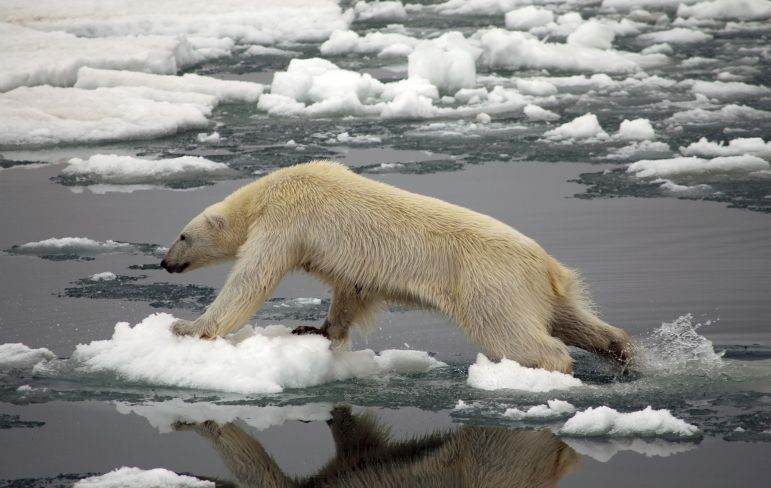
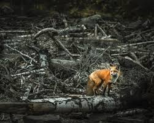
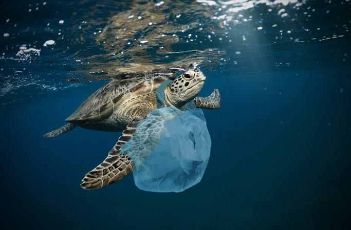
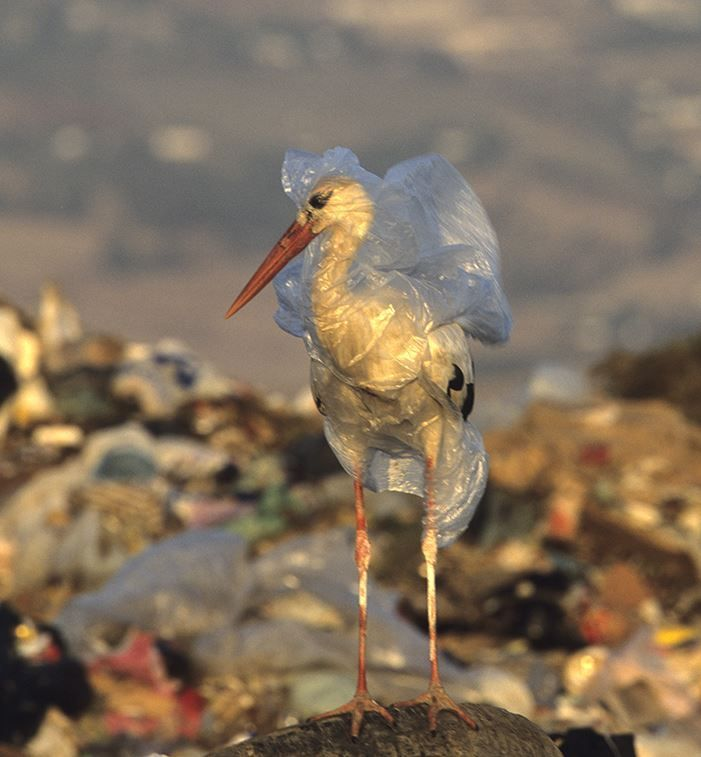

Bienvenido a este espacio de concientización. Esta página está dedicada a visibilizar cómo la expansión humana, la deforestación y la contaminación destruyen los hogares de millones de especies. Aquí conocerás las consecuencias de estas acciones, los animales que ya perdimos y cómo podemos cambiar el rumbo para proteger nuestro planeta.



